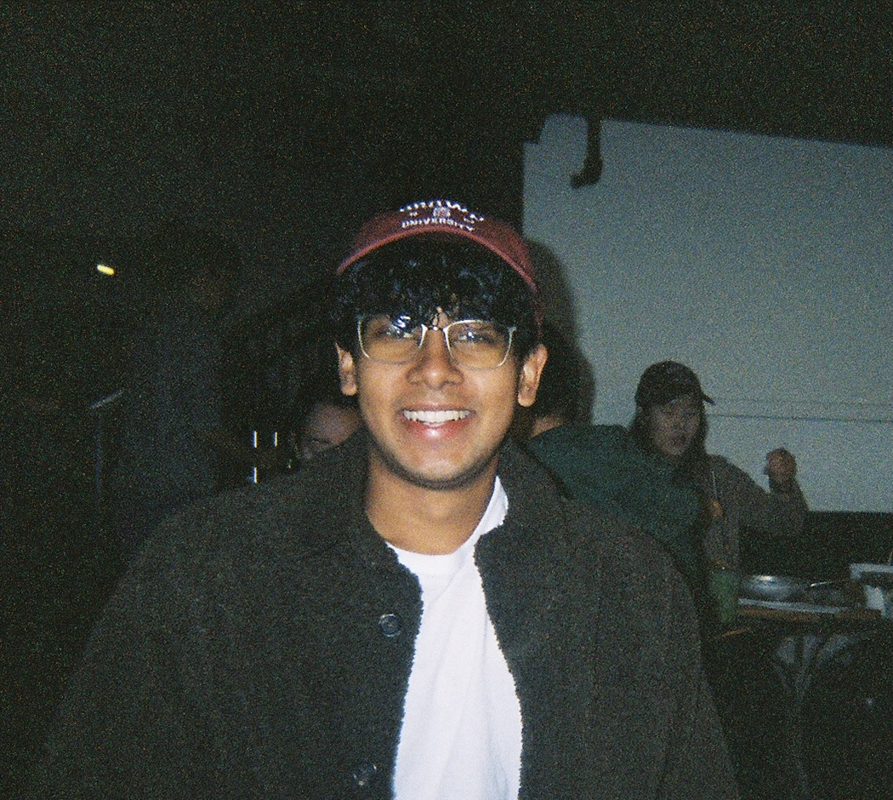

Kunal Handa

I am an MSc by Research student at the University of Oxford advised by Yarin Gal.
I am interested in language-grounded interactive learning: 1) building ML models that can continuously learn in the real world through interactions and collaborations with humans, and 2) understanding the broader societal implications of these interactions. Concretely, I have explored how to improve language models' preference learning abilities through user interaction, the failure modes of models in ambiguous scenarios and how to prevent them, how models' can help facilitate better student-teacher interactions, and how children undertake this process when first learning language.
Previously, I was a linguistics and computer science undergrad at Brown University advised by Ellie Pavlick and Chen Sun. I also spent two years at the Stanford NLP Group and Stanford CocoLab advised by Diyi Yang, Dora Demszky, and Noah Goodman with whom I continue to collaborate frequently.
You can contact me at: kunal [underscore] handa [at] alumni [dot] brown [dot] edu
Publications
Preprints
Bayesian Preference Elicitation with Language Models
Kunal Handa, Yarin Gal, Ellie Pavlick, Noah Goodman, Jacob Andreas, Alex Tamkin*, Belinda Z Li*.* denotes equal contribution. Under review, 2024.
Conference Papers
“Mistakes Help Us Grow”: Facilitating and Evaluating Growth Mindset Supportive Language in Classrooms
Kunal Handa, Margarett Clapper, Jessica Boyle, Rose E Wang, Diyi Yang, David S Yeager, Dorottya Demszky. In Proceedings of the Conference on Empirical Methods in Natural Language Processing (EMNLP), 2023.
Emergence of Abstract State Representations in Embodied Sequence Modeling
Tian Yun*, Zilai Zeng*, Kunal Handa, Ashish V Thapliyal, Bo Pang, Ellie Pavlick, Chen Sun. In Proceedings of the Conference on Empirical Methods in Natural Language Processing (EMNLP), 2023.
Task Ambiguity in Humans and Language Models
Alex Tamkin*, Kunal Handa*, Avash Shrestha, Noah Goodman. In the International Conference on Learning Representations (ICLR), 2023.
Journal Articles
Peekbank: An open, large-scale repository for developmental eye-tracking data of children's word recognition
Martin Zettersten... Kunal Handa... & Michael C Frank.outside of the position of the first and the last author, authorship position was determined by sorting authors' last names in reverse alphabetical order. In Behavior Research Methods (BRM), 2022.
Other Writing
The Role of Technology in Elections: The Voyage of Voters' Data
Kunal Handa. In Conduit, the Brown University Computer Science Annual Magazine, Volume 32, 2022.
Trying to Give a Shit About "Give a Shit": A Compositional Semantics Perspective
Kunal Handa
Teaching
At Brown, I served as the Socially-Responsible Computing Teaching Assistant for CS1470: Deep Learning. I designed contentsome of which is available via the course's website on deep learning's potential societal harms and conducted exercises that examined ethical frameworks, the cyclical nature of language models' biases, and the pros and cons of regulating ML advancements.
As a senior, I founded and led Brown's Explainable AI Reading Group. We presented and discussed topics across language modeling, reinforcement learning, computer vision, and multi-agent systems literature.
I also tutor incarcerated and previously incarcerated individuals in HiSET test preparation and essay writing. Intermittently, I teach group classes such as Applying to College and Introduction to Philosophy at juvenile detention centers.
Academic Service
I reviewed for Empirical Methods in Natural Language Processing (EMNLP), 2023; and, I reviewed for the Socially Responsible Language Modelling Research (SoLaR) Workshop at the Conference on Neural Information Processing Systems (NeurIPS), 2023.